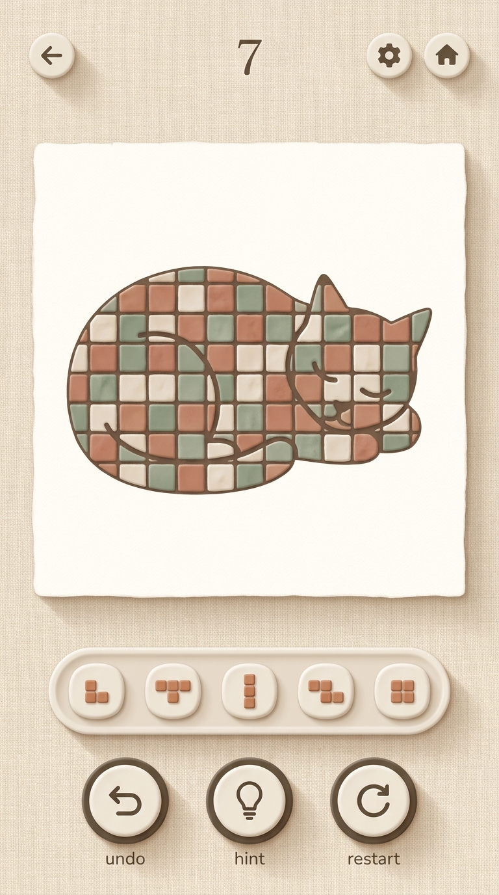
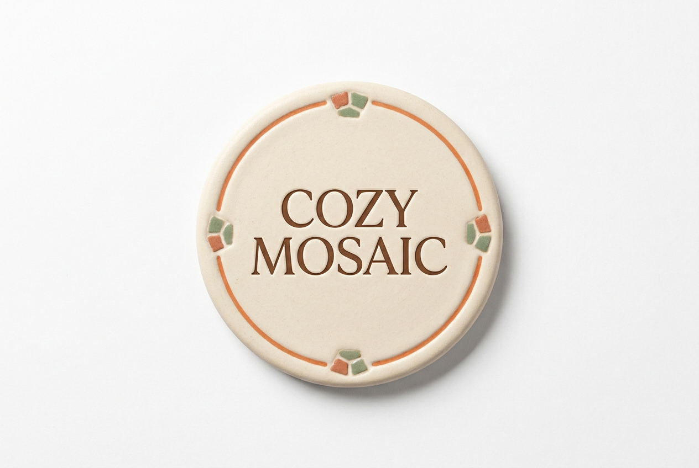
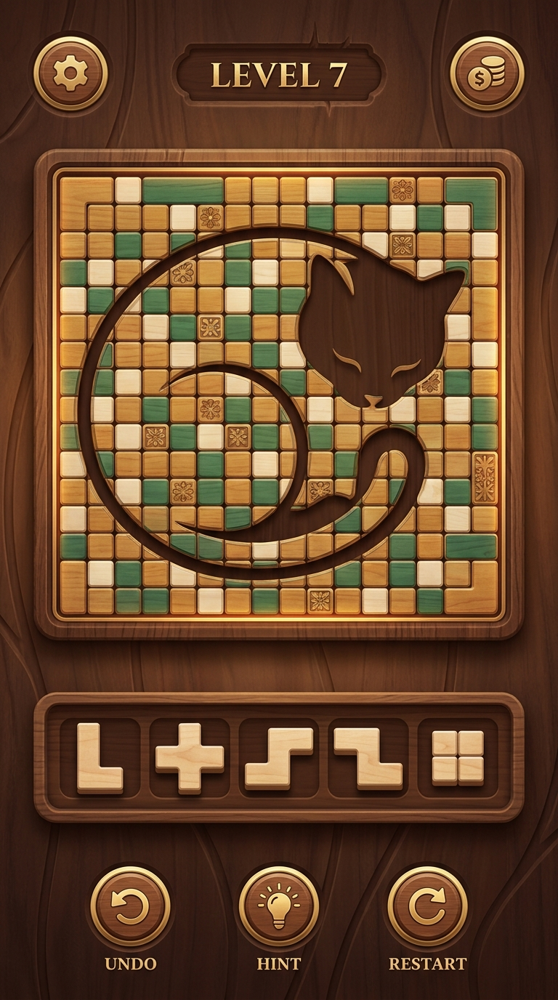
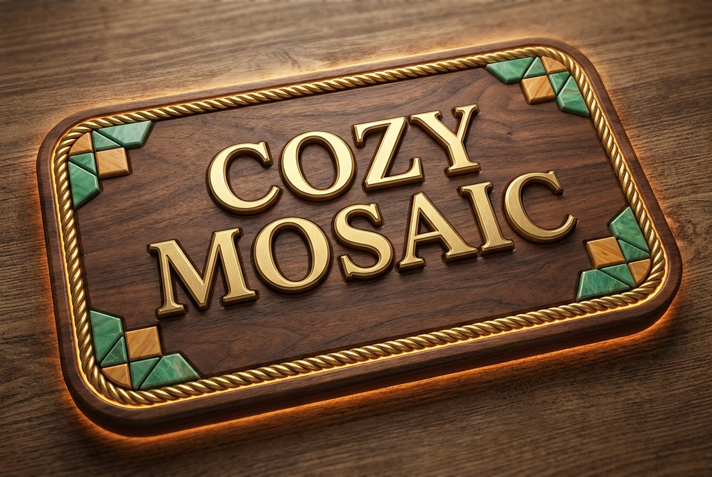
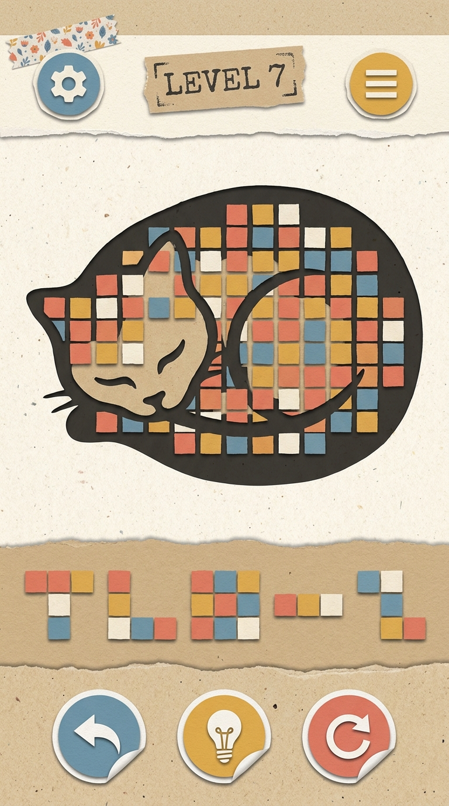
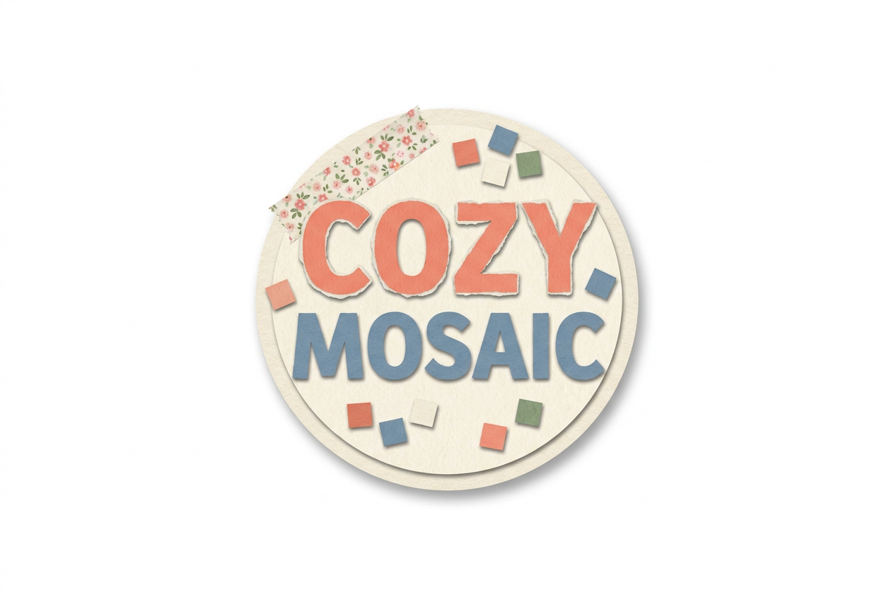
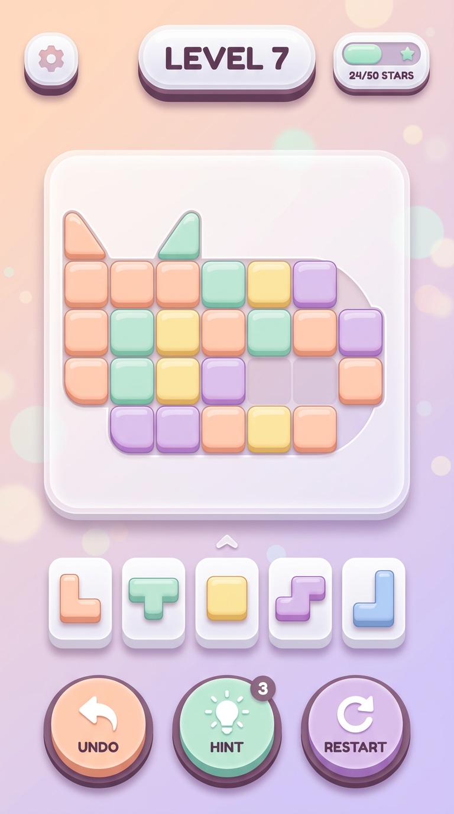
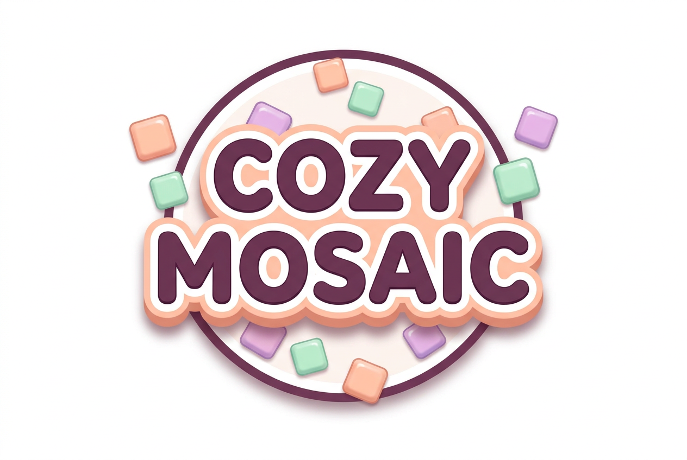

Ảnh lớn là art direction do codeb sinh; bấm vào thẻ để mở demo chạy được dựng
bằng HTML/CSS thật, có đủ 4 màn hình (trang chủ · chơi · phòng tranh · cài đặt) và cả
cú kết màn. Board trong demo dùng đúng dữ liệu tranh của game. Chốt một hướng rồi
mình áp thẳng vào index.html.

Đúng tinh thần bản hiện tại nhưng chỉnh cho ra dáng game: nền vải lanh thật, ô gốm men mờ, nút kem viền nâu có gờ dày.

Mở demo chạy được ›
Ngôn ngữ chuẩn của dòng block puzzle đang ăn khách: khung gỗ chạm, viền đồng, chữ vàng. Người chơi nhìn ảnh store là biết ngay thể loại.

Mở demo chạy được ›
Giấy cắt dán nhiều lớp, mép rách, nút dán sticker. Ô gạch nghiêng lệch vài độ lúc chơi rồi tự nắn thẳng khi khép mạch — cú kết màn nằm ngay trong chất liệu.

Mở demo chạy được ›
Bộ mặt casual đang phổ biến nhất 2025: nút bo tròn dày có gờ dưới, chữ đậm bo tròn, nền gradient pastel. Bấm nút nào cũng nảy.

Mở demo chạy được ›